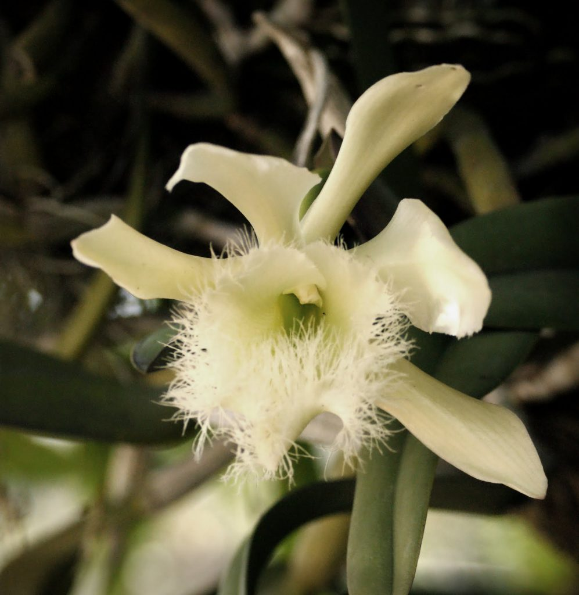

-
Simbolos Patrios
-
La Bandera

-
El Escudo
El escudo de Honduras fue creado por el Decreto Legislativo del 3 de octubre de 1825, está compuesto por símbolos alusivos a su territorio, historia y la variedad de recursos naturales que posee el país. Fue modificado por el Decreto Legislativo n.º 7, del 16 de febrero de 1866 (que creó la actual Bandera de Honduras), publicado en el Boletín Legislativo (de Comayagua) n.º 4 del 6 de marzo del mismo año, siendo Presidente de la República don José María Medina. El gorro frigio con luces, que aparecía hasta entonces debajo del arcoíris y encima del volcán que está entre los dos castillos, fue sustituido por un sol poniente

-
Himno Nacional
Coro Tu bandera es un lampo de cielo por un bloque de nieve cruzado; y se ven en su fondo sagrado cinco estrellas de pálido azul; en tu emblema, que un mar rumoroso con sus ondas bravías escuda, de un volcán, tras la cima desnuda hay un astro de nítida
I India virgen y hermosa dormías de tus mares al canto sonoro, cuando echada en tus cuencas de oro el audaz navegante te halló; y al mirar tu belleza extasiado, al influjo ideal de tu encanto, la orla azul de tu espléndido manto con su beso de amor consagró. Coro
II De un país donde el sol se levanta, más allá del atlante azulado, aquel hombre te había soñado y en tu busca a la mar se lanzó. Cuando erguiste la pálida frente, en la viva ansiedad de tu anhelo, bajo el dombo gentil de tu cielo ya flotaba un extraño pendón. Coro
III Era inútil que el indio tu amado, se aprestara a la lucha con ira, porque envuelto en su sangre Lempira en la noche profunda se hundió; y de la épica hazaña, en memoria, la leyenda tan sólo ha guardado de un sepulcro el lugar ignorado y el severo perfil de un peñón. Coro
IV Por tres siglos tus hijos oyeron el mandato imperioso del amo; por tres siglos tu inútil reclamo en la atmósfera azul se perdió; pero un día gloria tu oído percibió, poderoso y distante que allá lejos, por sobre el atlante indignado rugía un león. Coro
V Era Francia, la libre, la heroica, que en su sueño de siglos dormida despertaba iracunda a la vida al reclamo viril de Dantón; era Francia que enviaba a la muerte la cabeza del rey consagrado y que alzaba, soberbia a su lado el altar de la Diosa razón. Coro
VI Tú también¡Oh mi patria!te alzaste de tu sueño servil y profundo; tú también enseñastes al mundo destrozado el infame eslabón. Y en tu suelo bendito, tras la alta cabellera de monte salvaje como un ave de negro plumaje la colonia fugaz se perdió. Coro
VII Por guardar ese emblema divino marcharemos¡Oh patria!a la muerte; generosa será nuestra suerte si morimos pensando en tu amor. Defendiendo tu santa bandera, y en tus pliegues gloriosos cubiertos, serán muchos, Honduras, tus muertos, pero todos caerán con honor.
-
La Flor
La Orquídea Brassavola fue declarada Flor Nacional de Honduras mediante Decreto n. ° 96 en el Congreso Nacional de Honduras el 25 de noviembre de 1969, dicha flor es conocida como «Orquídea de la Virgen», debido a sus características excepcionales de belleza, vigor y distinción. Tegucigalpa. 27 de septiembre, 2021.
 -
El Ave
La guara roja (Ara macao) se nombra ave nacional de Honduras

-
-
Historia
La historia de Honduras, país ubicado en el centro de América Central, se remonta a unos 14 000 años (conforme al consenso de Clovis), en que se estima ocurrieron los primeros asentamientos de pobladores sedentarios en el país. Resalta en la historia geológica de Honduras el hecho de poseer el único reporte de fósiles de dinosaurios de América Central. Antes de la conquista por los españoles en el siglo XVI, lo que ahora es Honduras fue habitado por pueblos de culturas que interactuaron entre ellos en diverso grado, en el tiempo y el territorio. De aquella época sobresalen las influencias culturales mesoamericanas, mas en concreto la cultura olmeca, la tolteca y la maya. Además de diversos pueblos relacioandos con los grupos de influencia caribeña como los Pech, Tolupan, y Tawakhas.
-
Extension Territorial
Extensión total de 112,492 km2. Honduras tiene como limites geográficos al norte el mar Caribe o de las Antillas; al sur con la República de El Salvador y el Golfo de Fonseca, que comparte con Nicaragua y El Salvador; al este con Nicaragua, al sur oeste con El Salvador y al Oeste con Guatemala

-
Departamentos
- Atlantida
- Choluteca
- Colon
- Comayagua
- Copan
- Cortes
- El Paraiso
- Francisco Morazan
- Gracias a Dios
- Intibuca
- Islas de la Bahia
- La Paz
- Lempira
- Ocotepeque
- Olancho
- Santa Barbara
- Valle
- Yoro
-
Lugares Turisticos
- Roatán
- Copán Ruinas
- Cayos Cochinos
- Utila
- Tegucigalpa